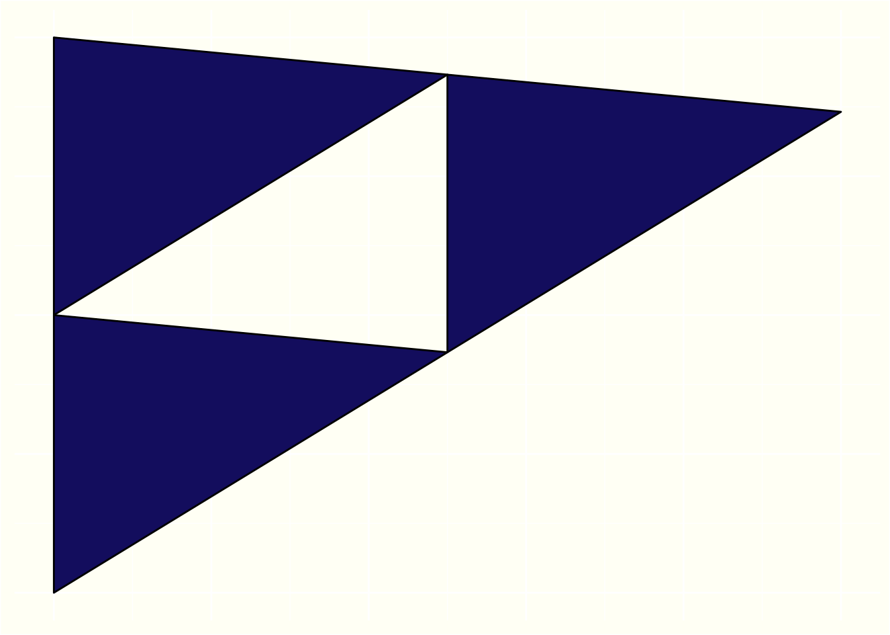

remotes::install_github("gabammour/heron")
library(heron)Heron’s library
Heron’s formula is a formula for finding the area of a triangle when you know the lengths of its three sides. It is named after the ancient Greek mathematician, Hero of Alexandria, who first described it.
\[A = \sqrt{s(s-a)(s-b)(s-c)}\]
where \(a\), \(b\), and \(c\) are the lengths of the sides of the triangle, \(s\) is the semiperimeter of the triangle, which is defined as \(s = \frac{1}{2}(a + b + c)\), and \(A\) is the area of the triangle. The reason Heron’s formula works is that it is based on the concept of the “Heronian triangle,”which is a triangle with integer sides and integer area. Heron’s formula gives the exact area of a Heronian triangle, and it turns out that every triangle can be split into two Heronian triangles. So, by using Heron’s formula to find the area of each of these two triangles and adding the results, you get the area of the original triangle.
How can I install it ?
The package must be install through my personal GitHub account. Install the library remotes and then :
For more information on this package, use :
?heronSierpiński triangle
First iteration

[1] "The triangle area is : 0.19"Second iteration

[1] "The triangle area is : 0.14"Third iteration
[1] "The triangle area is : 0.11"Fourth iteration

[1] "The triangle area is : 0.0791"